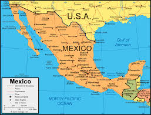

Colombia is full of vibrant culture, incredible landscapes, and warm people. Bogotá has a lively urban energy with amazing food and museums, while Puerto Carreño offers a peaceful, remote feel near the stunning Orinoco River. The combination of nature and culture makes Colombia unforgettable.
Mexico
Mexico is rich with history, color, and some of the best food in the world. Each city has its own personality—from the desert vibes of Chihuahua to the ocean beauty of Puerto Vallarta, Mazatlán, Zihuatanejo, and Cabo San Lucas. The coastlines, culture, and warmth of the people make it a place worth returning to.

Honduras
Honduras, especially Roatán, is stunning with its crystal-clear Caribbean waters and laid-back island atmosphere. It’s a phenomenal place for snorkeling, diving, and enjoying nature without the crowds of more commercial tourist spots.